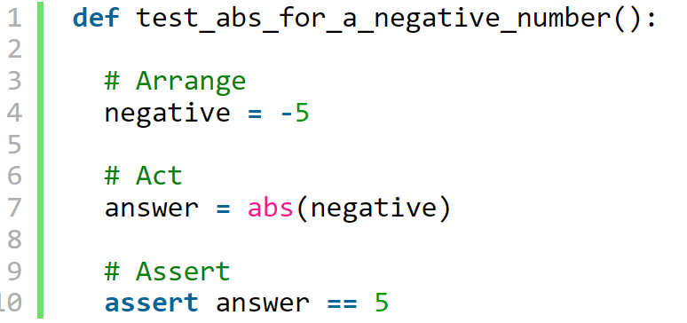

AAA Testing
ARRANGE-ACT-ASSERT: A PATTERN FOR WRITING GOOD TESTS
A test is a procedure that exercises a behavior to determine if the behavior functions correctly. There are several different kinds of tests, like unit tests, integration tests, or end-to-end tests, but all functional tests do the same basic thing: they try something and report PASS or FAIL.
Testingprovides an empirical feedback loop for development. That’s how testing keeps us safe. With tests, we know when things break. Without tests, coding can be dangerous. We don’t want to deploy big ol’ bugs!
So, if we intend to spend time writing tests, how can we write good tests? There’s a simple but powerful pattern I like to follow: Arrange-Act-Assert.
The Pattern
Arrange-Act-Assert is a great way to structure test cases. It prescribes an order of operations:
- Arrange inputs and targets. Arrange steps should set up the test case. Does the test require any objects or special settings? Does it need to prep a database? Does it need to log into a web app? Handle all of these operations at the start of the test.
- Act on the target behavior. Act steps should cover the main thing to be tested. This could be calling a function or method, calling a REST API, or interacting with a web page. Keep actions focused on the target behavior.
- Assert expected outcomes. Act steps should elicit some sort of response. Assert steps verify the goodness or badness of that response. Sometimes, assertions are as simple as checking numeric or string values. Other times, they may require checking multiple facets of a system. Assertions will ultimately determine if the test passes or fails.
Behavior-Driven Development follows the Arrange-Act-Assert pattern by another name: Given-When-Then. The Gherkin language uses Given-When-Then steps to specify behaviors in scenarios. Given-When-Then is essentially the same formula as Arrange-Act-Assert.
Every major programming language has at least one test framework. Frameworks like JUnit, NUnit, Cucumber, and (my favorite) pytest enable you, as the programmer, to automate tests, execute suites, and report results. However, the framework itself doesn’t make a test case “good” or “bad.” You, as the tester, must know how to write good tests!
Let’s look at how to apply the Arrange-Act-Assert pattern in Python code. I’ll use pytest for demonstration.
Unit Testing
Here’s a basic unit test for Python’s absolute value function:
This test may seem trivial, but we can use it to illustrate our pattern. I like to write comments denoting each phase of the test case as well.
- The Arrange step creates a variable named “negative” for testing.
- The Act step calls the “abs” function using the “negative” variable and stores the returned value in a variable named “answer.”
- The Assert step verifies that “answer” is a positive value.
Feature Testing
Let’s kick it up a notch with a more complicated test. This next example tests the DuckDuckGo Instant Answer API using the requests package:

We can clearly see that the Arrange-Act-Assert pattern works for feature tests as well as unit tests.
- The Arrange step forms the endpoint URL for searching for “Python Programming.” Notice the base URL and the query parameters.
- The Act steps call the API using the URL using “requests” and then parse the response’s body from JSON into a Python dictionary.
- The Assert steps then verify that the HTTP status code was 200, meaning “OK” or “success,” and that the word “Python” appears somewhere in the response’s abstract text.
Arrange-Act-Assert also works for other types of feature tests, like Web UI and mobile tests.
More Advice
Arrange-Act-Assert is powerful because it is simple. It forces tests to focus on independent, individual behaviors. It separates setup actions from the main actions. It requires test to make verifications and not merely run through motions. Notice how the pattern is not Arrange-Act-Assert-Act-Assert – subsequent actions and assertions belong in separate tests! Arrange-Act-Assert is a great pattern to follow for writing good functional tests.
{% endblock %}